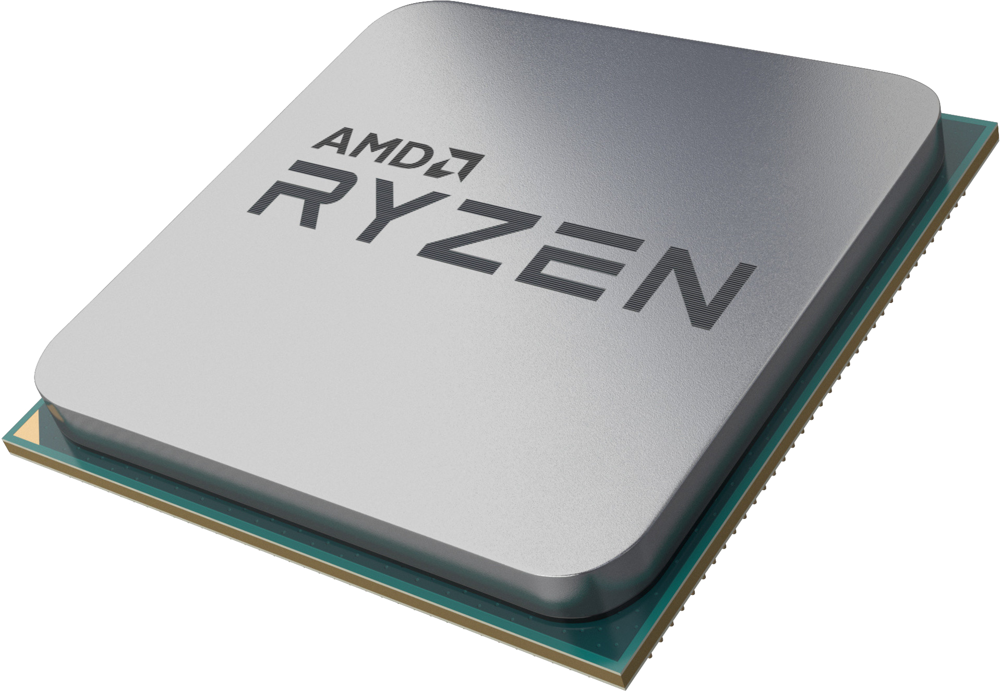
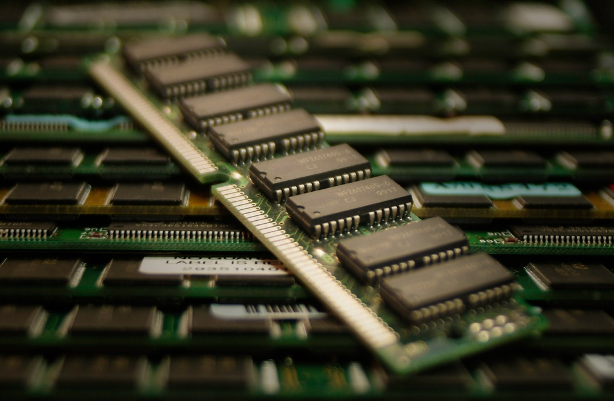
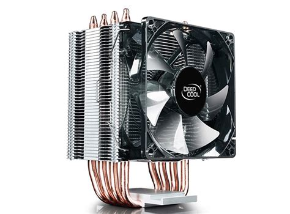
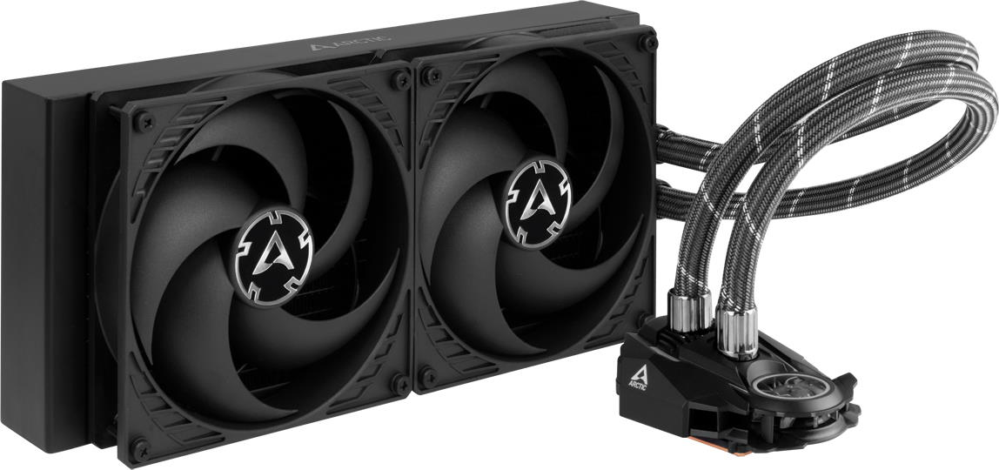
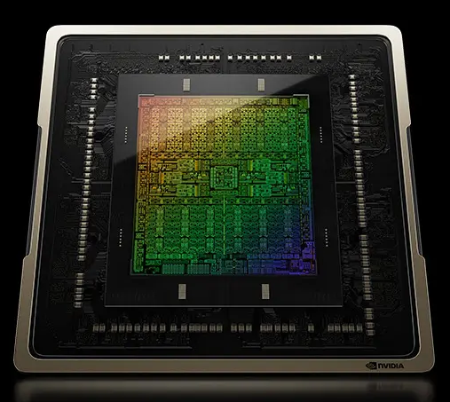

CPU - электронный блок либо интегральная схема,
исполняющая машинные инструкции (код программ), главная часть аппаратного обеспечения компьютера или программируемого логического контроллера

Основные харктеристки процессора
Тактовая частота: Это измеряется в гигагерцах (ГГц) и указывает на скорость работы процессора. Чем выше тактовая частота, тем быстрее процессор выполняет вычисления.
Количество ядер: Многие современные процессоры имеют множество ядер, что позволяет выполнять несколько задач одновременно. Это называется многозадачностью.
Кэш-память: Кэш-память - это быстрая память, используемая процессором для хранения данных, наиболее часто используемых при выполнении задач. Большой кэш может улучшить производительность.
На данный момент есть только два крупных производителя процессоров:
Intel и
AMD.
Оперативная память(AKA RAM)
RAM - в большинстве случаев энергозависимая часть системы компьютерной памяти, в которой во время работы компьютера хранится выполняемый машинный код (программы),
а также входные, выходные и промежуточные данные, обрабатываемые процессором.
Запоминающее устройство (ОЗУ) — техническое устройство, реализующее функции оперативной памяти. ОЗУ может изготавливаться как отдельный
внешний модуль или располагаться на одном кристалле с процессором, например, в однокристальных ЭВМ или однокристальных микроконтроллерах.

Основные характеристики ОЗУ
Объем (количество): Объем оперативной памяти измеряется в гигабайтах (ГБ) и определяет, сколько данных и программ может одновременно храниться в памяти компьютера. Больший объем памяти позволяет выполнять более ресурсоемкие задачи.
Скорость: Скорость оперативной памяти измеряется в мегагерцах (МГц) или мегабайтах в секунду (МБ/с) и влияет на скорость доступа к данным. Быстрая ОЗУ может ускорить выполнение задач.
Тип памяти: Существуют различные типы оперативной памяти, такие как DDR4, DDR5, и другие. Тип определяет совместимость с материнской платой и общую производительность.
Производителей RAM много, из них всех можно отметить Kingston и
Samsung.
Система охлаждения
Кулер — локальное название сборки вентилятора с радиатором, устанавливаемой для воздушного охлаждения электронных компонентов компьютера с повышенным тепловыделением (обычно более 5 Вт): центрального и графического процессоров, микросхем чипсета.
Жидкостное охлаждение — система отвода излишнего тепла от рабочего тела посредством контакта с циркулирующей охлаждающей жидкостью.
Главными преимуществами этой схемы по сравнению с воздушным охлаждением являются способность отводить большее количество тепла, меньший размер установки и более низкий уровень шума.

Кулер башенного типа

Жидкосное охдаждение
Если вы запустите пк без какого-либо охдаждения, то ваш компьютер примерно после 30 секунд выклюсится, это сдлеано для того, чтобы процессор не сгорел.
Процессор можна охлаждать не только с помощью этих двух видов охлаждения, их можно охлаждать как угодно, хоть азотом(так люди делали). Главное чтобы тепло отводилось от крышки процессора.
Процессоры способны нагреватся до 100 градусов. На больших температурах он способен сгореть.
Интересный факт: Есть человек который пожарил яичницу на процессоре, смотреть
видео.
Видеокарта(AKA GPU)
GPU - это буквально второй процесор в компьютере, но он отвечает только за вывод картинки на экран, широко используется в обучении нейронных сетей, 3D-моделироавни, либо одна из самый распространённых задач - запуска современных игр с красивой графикой.

Основные характеристики видеокарты
1. Объем видеопамяти
2. Тип памяти: влияет на скорость самой памяти
3. Частота графического процессора
4. Частота памяти
GPU надо как-то охлаждать, но их производители по-заботились про нас и продают GPU вместе c охдаждением. Из-за этого это устройство приминяет совсем другой вид и ри сюда и берется название "видеокарта".
Видеокарта в большинстве случаев оказывается самой дорогой комплектующей в пк.
Покачто на данный момент есть два крупных производителя видеокарт: NVIDIA и AMD.
SSD и HDD
Твердотельный накопитель (англ. Solid-State Drive, SSD) — компьютерное энергонезависимое немеханическое запоминающее устройство на основе микросхем памяти, альтернатива жёстким дискам (HDD). Наиболее распространённый вид твердотельных накопителей использует для хранения данных флеш-память типа NAND, однако существуют варианты, в которых накопитель создаётся на базе DRAM-памяти, снабжённой дополнительным источником питания — аккумулятором. Помимо собственно микросхем памяти, подобный накопитель содержит управляющую микросхему — контроллер.
Накопи́тель на жёстких магни́тных ди́сках, или НЖМД (англ. hard (magnetic) disk drive, HDD, HMDD), жёсткий диск, разг. винчестер — запоминающее устройство (устройство хранения информации, накопитель) произвольного доступа, основанное на принципе магнитной записи. Является основным накопителем данных в большинстве компьютеров.
Интересный факт: SSD намногобыстрее HDD, тоесть данные загружатя(открыватся) будут намного быстрее. Например чтобы ваш пк включился на операционной системе Windows, с твёрдым накопителем вам понадобится подождать где-то 15 секунд. ТОгда как с HDD не менее одной минуты